비서-2급 (2014-11-09 기출문제)
1과목: 비서실무
1. 다음 중 로밍서비스에 대한 설명으로 옳지 않은 것은?
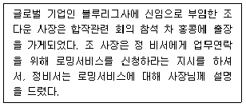
- “자동로밍은 사장님 번호를 그대로 외국에서도 사용할 수 있어서 좋습니다.”
- “자동로밍도 일반전화처럼 발신자에게 요금이 부담되어 수신하는 데는 부담이 없으십니다.”
- “자동로밍이 되지 않는 경우 인천공항이나 각 이동 통신 회사 서비스 센터에서 언제든지 신청할 수 있어 편리합니다.”
- “자동로밍을 하게 되면 사장님의 단말기를 그대로 이용 할 수도 있으니 편하실 겁니다. 한 번 알아보겠습니다.”
(정답률: 66%)

2. A회사 사장실에 근무하는 김비서는 홍보업무도 함께 담당하고 있다. 언론사의 기자가 회사와 사장님을 취재하고 싶다면서 회사와 사장님의 프로필을 먼저 보내달라고 요청한다. 이 때 비서의 행동으로 가장 바람직하지 않은 것은?
- 회사 홍보에 도움이 되므로 프로필을 바로 전송하였다.
- 사장님께 보고 후 보내드리겠다고 언론사에 양해를 구하였다.
- 언론사 이름, 기자 이름 및 소속과 연락처를 받아 확인 하였다.
- 언론사에 보낼 회사와 사장님의 프로필 초안을 작성해놓았다.
(정답률: 67%)
3. 다음 중 상황별 비서의 전화업무 처리로 가장 바람직한 경우는?
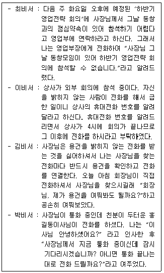
- 최비서
- 이비서
- 김비서
- 박비서
(정답률: 70%)
4. 다음은 비서가 갖추어야 할 직업윤리 중 무엇과 가장 가까운 설명인가?
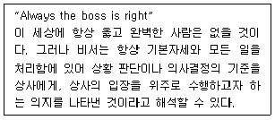
- 책임감
- 신뢰성
- 직업의식
- 충성심
(정답률: 41%)
5. 다음 중 상사가 거래처로부터 경기관람이나 스포츠 행사에 초대받았을 경우 비서가 지원해야 하는 업무 내용으로 가장 적절하지 않은 것은?
- 초대한 측에서 보통 교통편과 티켓 등을 준비하지만, 우리 측도 관련 내용을 별도로 재확인 한다.
- 행사 당일 복장 스타일을 미리 확인하여 상사에게 알려드린다.
- 상사에게 경기 규칙에 대한 내용을 정리하여 전달해 드린다.
- 우리회사가 증정품이나 기념품을 준비할 것인지 거래처에 사전에 물어보아 상사에게 보고하고 준비하도록 한다.
(정답률: 53%)
6. 다음 중 해외출장을 떠나는 상사를 위해 비서가 지원할 수 있는 항공지원업무에 대한 설명으로 가장 잘못된 것은?
- 사전 좌석 지정 서비스는 항공사마다 차이가 있지만 대개 출발 90일 전부터 이용할 수 있으므로 상사의 선호 좌석을 미리 파악하여 지정해 놓는다.
- 상사가 부득이하게 환승이 필요할 경우 공항 내 샤워룸이 있는지를 확인하는 등 상사가 공항 부대서비스를 활용할 수 있도록 보고한다.
- 탑승수속을 미리 지원하지 못했을 경우에는 공항의 탑승권 자동발급기‘키오스크’의 위치를 확인하여 상사에게 알려드린다.
- 상사가 출장 시 가족을 동반할 경우에는 상사 개인의 영역이므로 가족을 위한 지원업무는 이행하지 않는다.
(정답률: 65%)
7. 다음 중 Ms. Jones의 한국 방문 일정표를 작성하는 과정 에서 주의해야할 사항으로 가장 적절하지 않은 것은?
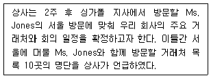
- 가급적 일정표 한 면에 하루분의 일정이 표기되도록 하여 해당일자의 업무에 집중할 수 있도록 작성한다.
- Ms. Jones가 한국에서 사용할 휴대전화번호도 일정표에 함께 표기하여 한국 체류기간동안 함께 이동할 내 상사에게도 일정표를 전달해 드리도록 한다.
- 일정표에 한국 시간과 싱가폴 현지 시간을 함께 표기하여 Ms. Jones가 시차를 혼동하지 않도록 배려한다.
- 한국 방문일정 중 싱가폴 현지에서 미리 계획한 Ms. Jones의 추가 일정이 있는지를 현지 비서와 확인하여 일정표에 반영해 놓는다.
(정답률: 29%)
8. 다음 중 위 부고문의 내용을 토대로 상사에게 보고하기 위해 추가 확인이 필요한 내용으로 중요도가 가장 낮은 것은?(8번 공통지문 문제)
- 장지 위치
- 부의 및 조화 사절 여부
- 영결식 일정
- 친족대표명
(정답률: 36%)
9. 한국물산의 대표이사 비서인 장비서가 전화 응대하는 방법 중 가장 적절한 것은?
- 상사가 외출중일 때 거래처 김상무로부터 모레 오후 3시에 상사를 만나고 싶다는 면담요청전화를 받았다. 마침 상사의 일정이 비어 있어서 오후 3시에 오시라 말씀드리고 상사와 비서의 일정표에 3시 일정을 표시하였다.
- 상사의 부탁으로 대영물산 최이사님에게 전화를 걸어 상사의 메모를 전해드린 후에 “최이사님, 수고하십시오.” 라고 하면서 친절하게 마무리 인사를 하였다.
- 상사가 회의 중일 때 M상사의 전무로부터 급한 일로 긴급히 통화를 원한다는 전화를 받았다. 지금은 회의 중이므로 통화가 곤란하니 상사에게 메모를 넣어 여쭙겠다고 하였다.
- 하청업체인 D실업 강철수 사장의 비서로부터 상사와 통화를 원한다고 전화를 받은 장비서는 강철수 사장 비서에게 “같이 연결할까요?”라고 말했다.
(정답률: 65%)
10. 다음 중 로펌(Law Firm)에 재직 중인 최비서가 전문비서로 서의 역량강화를 위해 설정한 자기계발 계획의 예로서 가장 적절하지 않은 것은?
- 커리어 관리를 위해 이직에 대비하여 취업정보와 구인정보를 지속적으로 업데이트한다.
- 법률지식을 심도 있게 공부하기 위해서 로스쿨에 진학하여 업무와 병행한다.
- 미국전문비서협회의 CPS 자격증을 취득한다.
- 언론에 보도된 기사를 통해 클라이언트 기업에 관한 정보를 취득하여 업무 이해도를 높인다.
(정답률: 20%)
11. 누리증권 대표이사는 외부에서 12시에 예정인 오찬약속을 마친 직후 회사로 돌아와 2시에 리서치 담당 전무와 함께 투자자와 회의를 할 예정이다. 양송이 비서가 내방객인 투자자를 응대하는 행동으로 가장 적절치 않은 것은?
- 양송이 비서는 내방객의 회의 도착시각을 예측하기 위해 내방객의 차량기사에게 미리 부탁하여 출발하는 시점에 연락을 받도록 한다.
- 양송이 비서는 상사에게 오찬 후 후식으로 드신 차 종류를 여쭈어보고 드시지 않은 음료를 선택하여 준비한다.
- 양송이 비서는 상사가 회의 참석에 늦을 것 같아 상사에게 보고 후 동석할 리서치담당 전무를 투자자와 함께 먼저 회의실에 모셔 차를 접대한다.
- 양송이 비서는 내방객을 맞이하는 도중에 전화가 와서, “잠깐 실례하겠습니다.”라고 손님에게 양해를 구하고 나서 통화를 한다.
(정답률: 19%)
12. 보고를 듣고 난 상사는 포럼에 참석할 예정이며, 축사를 하기로 포럼 이사장님과 구두로 약속을 하였으니 10월 1일 선약은 취소하라고 하고 포럼 주제와 관련된 내용을 초안으로 작성해보라고 지시하셨다. 상사의 지시를 받고 취해야할 김비서의 태도로 가장 적절한 것은?(13번 공통지문 문제)
- 상사가 지시하는 동안에 정확한 이해를 위해 말씀 중간 중간에 정확히 짚어서 확인하였다.
- 먼저 선약을 취소하고, 포럼 주제에 어울리는 축사 초안을 준비한다.
- 김비서는 자신은 디자인 전공이 아니므로, 축사 초안을 다른 부서에 의뢰하겠다고 말씀드린다.
- 지금 처리해야할 긴급한 업무가 있으므로 상사에게는 일단 “네” 라고 말씀드리고 업무 계획을 알아서 조정하여 처리하도록 한다.
(정답률: 71%)
13. 다음 중 비서가 상사에게 보고를 할 때의 화법으로 가장 적절한 것은?
- “사장님, 오늘도 바쁘신 일정에 수고 많으셨습니다.”
- “사장님, 회장님께서 잠깐 뵙자고 회장님실로 오라고 하십니다.”
- “사장님, 김 이사님이 물어볼 것이 있다고 합니다.”
- “사장님, 신규 프로젝트 건은 지시하신대로 처리하겠습니다.”
(정답률: 57%)
14. 강주은 비서는 새로운 업무가 주어지면서 과다한 업무로 인해 자신감이 상실되고 스트레스를 받고 있다. 이에 대처하는 자세 및 스트레스 관리방법에 대한 설명으로 가장 적절하지 않은 것은?
- 새로운 업무가 주어지는 것으로 인한 스트레스를 해소하고 업무에 자신감을 부여할 수 있도록 관련된 세미나에 참석하거나 전문가의 조언을 받는다.
- 다른 사람에게 업무를 위임하기 보다는 모든 일을 스스로 해결하기 위한 역량을 길러서 경쟁력을 갖추도록 한다.
- 규칙적인 운동과 긍정적인 마음으로 스트레스를 조절하면 자신감도 가질 수 있다.
- 현재 하고 있는 업무를 분석하여 업무를 조직화 하게 되면 일에 대한 집중력을 높여 효율적으로 처리하게 되므로 스트레스를 줄일 수 있다.
(정답률: 72%)
15. 다음 중 전문비서의 업무에 해당되지 않는 것은?
- 전문비서는 오늘날 시간관리자, 정보관리자, 인간관계 관리자로서 경영자의 경영활동을 원활히 해주는 보좌인이다.
- 팀 구성원으로서 비서는 다기능, 다기술적 면의 함양보다는 전문적 단일 기술의 심화를 요구받고 있다.
- 비서는 업무를 통하여 끊임없이 변화를 겪게 되고, 어떠한 변화에도 신속하고 능동적으로 대처하는 융통성이 필요하다.
- 비서는 상사 부재 시 위임된 업무를 수행하고 주의를 요하는 일은 대리권자에게 알리거나 상사 부재 영향을최소화하는 방식으로 처리하기 위해 판단력을 발휘한다.
(정답률: 73%)
16. 위의 항공일정에 따라 비서가 수행한 업무 중 가장 바람직하지 않은 경우는?(18번 공통지문 문제)
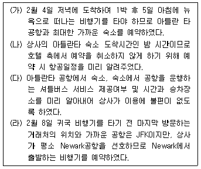
- (가)
- (나)
- (다)
- (라)
(정답률: 63%)
17. 곧 미국 출장을 떠나는 상사를 위하여 비서가 일반적으로 점검해야 하는 내용으로 중요도가 가장 낮은 것을 고르시오.
- 현지의 정치 집회 유무 - 예방 접종 확인 카드 준비
- 해외여행자 보험 내역 확인 - 방문기간 현지의 기온변화
- 렌터카를 이용하는 상사를 위한 mile과 km 단위 거리비교 - 비자 유효기간 확인 - 방문기간 동안 해당 도시의 대형 행사 유무
- 출장 기간 동안의 현지 공휴일 - 휴대전화 로밍 서비스수·발신 요금
(정답률: 53%)
2과목: 경영일반
18. 다음 중 대형 TV를 보기 시작하면서 소비자들이 점점 더 큰 TV를 선호하는 것처럼 한 번 올라간 소비수준이 쉽게 후퇴하지 않는 현상을 일컫는 용어로 가장 적절한 것은?
- 부메랑효과
- 피구효과
- 레버리지효과
- 톱니효과
(정답률: 27%)
19. 다음 중 재무상태표에 대한 설명으로 가장 적절하지 않은 것은?
- 일정기간의 경영성과를 보고하는 보고서이다.
- 특정시점 현재기업이 보유하고 있는 자산과 부채, 자본의 잔액에 대한 정보를 보고하는 보고서이다.
- 정보이용자들이 기업의 유동성, 재무적 탄력성, 수익성과 위험 등을 평가하는데 유용한 정보를 제공한다.
- 차변에 자산과 대변에 부채 및 자본으로 구성되어 있다.
(정답률: 47%)
20. 인터넷을 이용한 전자상거래로 고객과의 직거래가 많이 증가하고 있다. 이로 인해 기업의 마케팅 활동에 가장 큰 영향을 받은 업무는 무엇인가?
- 품질(Quality)
- 촉진(Promotion)
- 제품(Product)
- 유통(Place)
(정답률: 44%)
21. 다음 중 제품 가격을 10% 올릴 경우 매출액의 변화를 예측하고 분석하기 위해 관리자가 사용할 수 있는 경영정보 시스템의 유형으로 가장 적절한 것은?
- 거래처리시스템
- 의사결정지원시스템
- 정보보고시스템
- 전략계획시스템
(정답률: 20%)
22. 다음 중 법에 의해 종업원을 보호하도록 기업이 의무적으로 지급하는 법정복리후생으로 가장 적절하지 않은 것은?
- 고용보험
- 건강보험
- 개인연금보험
- 산업재해보상보험
(정답률: 69%)
23. 다음 의사결정의 기법 중 브레인스토밍에 대한 설명으로 가장 적절하지 않은 것은?
- 브레인스토밍은 보다 많은 아이디어를 유발하기 위해서 질보다 양 우선의 원칙을 준수하도록 한다.
- 브레인스토밍은 참가자들의 적극적인 태도를 통해 문제 해결능력을 향상할 수 있다.
- 브레인스토밍은 자유분방한 아이디어를 유발하는 방법으로 위험이나 불확실성이 큰 문제에 적용하는 데 효과적이다.
- 브레인스토밍에서 나온 의견에 대해 평가하거나 판단하지 않는다.
(정답률: 32%)
24. 다음에서 설명하는 경영관리기법으로 가장 적절한 것은?
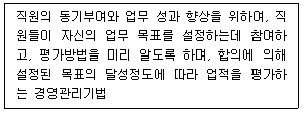
- 벤치마킹
- 목표관리(MBO)
- 성과 측정
- 승진 및 이동관리
(정답률: 71%)
25. 다음 중 기업의 인수·합병(M&A)이 미치는 영향에 대한 설명으로 가장 적절하지 않은 것은?
- 동종산업 내에서 이루어지는 수평적 합병은 시장 점유율을 확대시켜 지배적 위치를 확보할 수 있다.
- 합병되는 회사의 여러 자원을 공동 이용함으로써 원가가 절감되는 규모의 경제성을 기대할 수 있다.
- 합병을 통해 새로운 사업에 낮은 위험부담이 있어서 신속하게 진출할 수 있다.
- 합병으로 부채차입능력이 줄어들고 자본의 조달비용이 증가한다.
(정답률: 27%)
26. 다음 중 기업형태에 대한 설명으로 가장 적절한 것은?
- 주식회사는 무한책임을 지는 1인 이상의 출자자에 의해 설립된 기업형태로 설립절차와 운영방법이 간단하다.
- 유한회사는 소액의 자본으로 운영되는 기업으로 지분의 양도가 자유로워 소유권 이전이 용이하다.
- 합자회사는 무한책임사원과 유한책임사원으로 구성하며 사업경영은 무한책임사원이 하는 것이 일반적이다.
- 합명회사는 2인 이상의 사원이 유한책임이 있어서 개인기업에 비해 자본조달이 어렵다.
(정답률: 64%)
27. 다음 중 기업의 사회적 책임에 대한 설명으로 가장 적절하지 않은 것은?
- 기업의 사회적 책임은 이윤극대화를 추구하는 경제적 역할에 국한된다.
- 기업의 지역사회에 대한 책임은 경제적, 문화적 투자와 같은 지역발전에 대한 책임을 포함한다.
- 기업의 주주에 대한 책임은 주주에게 적정한 이윤을 배당하는 책임을 포함한다.
- 기업의 종업원에 대한 책임은 물질적 보상뿐만 아니라 정신적, 심리적, 사회적 책임까지 포함한다.
(정답률: 27%)
28. 다음 중 기업환경에 대한 설명으로 가장 적절하지 않은 것은?
- 기업환경은 기업이나 기업 활동에 영향을 미치는 기업의 내부 및 외부적 요소를 말한다.
- 기업환경은 끊임없이 변화하지만, 특정 시기의 외부환경이 여러 개별기업에게 미치는 영향은 동일하게 나타난다.
- 기업환경은 주주, 소비자, 협력업체 등 경영활동에 관련 된 이해관계자를 포함한다.
- 기업은 지속적 경쟁우위를 확보하기 위해서 끊임없는 환경탐색을 한다.
(정답률: 77%)
29. 다음에서 설명하는 시사 용어로 가장 적절한 것은?
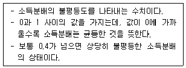
- 지니계수
- 엥겔지수
- 빅맥지수
- 십분위분배율
(정답률: 47%)
30. 다음에서 설명하는 용어로 가장 적절한 것은?
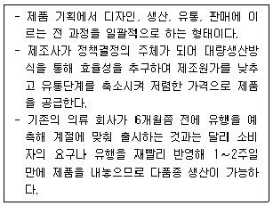
- 제조 소매업(SPA Brand)
- 슬로우 패션(Slow Fashion)
- 유통업자 브랜드(Private Brand)
- 특정 유통업체 전용상품(National Private Brand)
(정답률: 42%)
31. 다음 중 매트릭스 조직구조에 대한 설명으로 가장 적절한 것은?
- 매트릭스 조직은 인력을 신축적으로 활용할 수 있는 형태로 불확실성이 큰 환경에 적합한 구조이다.
- 조직 규모가 크고 취급하는 제품의 종류가 많을수록 매트리스 조직의 효율성이 높아진다.
- 매트릭스 조직은 특정 과제를 위해 만들어지는 임시적 조직이다.
- 매트릭스 조직은 지휘계통과 권한체계가 명확하기 때문에 부서 간 조정과 협력이 많이 요구되는 경우에 효율적인 구조이다.
(정답률: 30%)
32. 다음 중 부서를 제품별, 시장별, 지역별로 만들고 각 부서로 하여금 제조에서 판매, 구매, 회계까지 독자적으로 할 수 있도록 하는 조직 형태를 무엇이라 하는가?
- 기능별 조직
- 사업부 조직
- 매트릭스 조직
- 팀 조직
(정답률: 60%)
33. 다음에서 설명하는 동기부여 이론으로서 가장 적절한 것은?
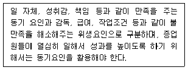
- 매슬로우의 욕구단계이론
- 앨더퍼의 ERG 이론
- 허츠버그의 2요인 이론
- 맥그리거의 XY이론
(정답률: 47%)
34. 다음에서 설명하는 기업 형태로서 가장 적절한 것은?
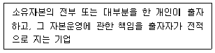
- 개인기업
- 합명회사
- 합자회사
- 유한회사
(정답률: 67%)
35. A 기업과 B 기업은 법적으로는 독립된 별개의 기업이지만, A 기업이 B 기업의 지분을 갖고 있는 최대주주이다. 이와 유사하게 법률적으로 독립적인 기업이 출자 등을 기초로 지배종속 관계에 의해 형성되는 기업결합 방식으로 가장 적절한 것은?
- 콘체른
- 트러스트
- 카르텔
- 콤비나트
(정답률: 32%)
36. 벤처 사업에 대한 다음 설명 중 가장 적절하지 않은 것은?
- 새로운 시장 수요나 사업 기회를 창출하는 사업이다.
- 고위험 고수익의 사업이다.
- 지식 집약형, 기술 집약형 기업이다.
- 노동 집약적이며 많은 자본을 필요로 한다.
(정답률: 65%)
37. 다음 중 기업의 환경 분석을 위한 SWOT 분석에서 내부역량의 분석 대상으로 가장 적절한 것은?
- 강점과 위협
- 강점과 약점
- 기회와 위협
- 기회와 약점
(정답률: 67%)
3과목: 사무영어
38. Which statement has the underlined word that is not used properly?
- Where is the manual for this watch?
- I'd like to reserve a table for five people.
- You should hardly try to improve your communication skills.
- All the staff enthusiastically took their parts in the event.
(정답률: 47%)
39. Which is the least appropriate notation for underlined ⓐ?
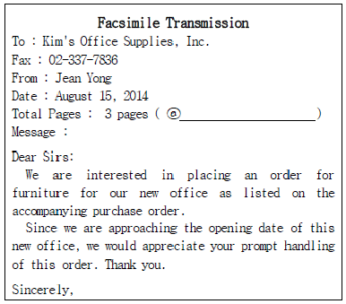
- Including this
- Including enclosure
- Including cover sheet
- Including cover page
(정답률: 42%)
40. Choose the pair of the term used in correspondence and its explanation that does not match correctly.
- inside address : the address of recipient
- return address : sender's address, letterhead
- cc : the secondary recipients who receive copies of the same message simultaneously
- attention line : the space for subject of the message
(정답률: 27%)
41. Which statement is not correct according to Mr. Smith’s itinerary?
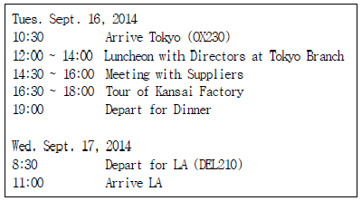
- He will be taking two different airlines on this trip.
- He will stay in Tokyo for two days and two nights.
- He will have lunch with directors at noon right after arrival in Tokyo.
- He arrives in LA at 11:00 a.m. local time.
(정답률: 59%)
42. Choose the answer which is not mentioned in the letter.
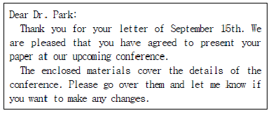
- This is a reply to the letter of September 15th.
- Dr. Park will make a presentation at the conference.
- Presentation materials will be sent along with the letter.
- Dr. Park has accepted an offer to present a paper for the conference.
(정답률: 39%)
43. Choose the set of keywords and its explanation that do not match each other.
- minutes : proceedings of a meeting
- confidential : to be handled immediately
- handout : something to be distributed
- venue : meeting place such as convention center or conference room
(정답률: 34%)
44. Which statement is true according to the conversation?
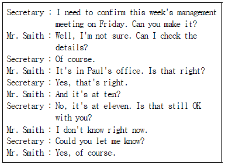
- Mr. Smith is unable to attend the meeting on Friday.
- Mr. Smith has decided to attend the meeting on Friday.
- Mr. Smith prefers the meeting on Thursday.
- The meeting is scheduled on Friday at 11:00.
(정답률: 28%)
45. Choose the expression that is not appropriate for the underlined blank ⓐ.
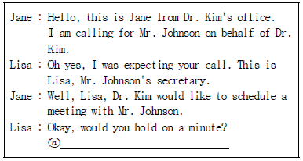
- I'll transfer this call to Mr. Johnson.
- Mr. Johnson will be out to meet you soon.
- Let me connect you to Mr. Johnson.
- I'll put you through to Mr. Johnson.
(정답률: 48%)
46. Choose the set of sentences which complete the dialogue.
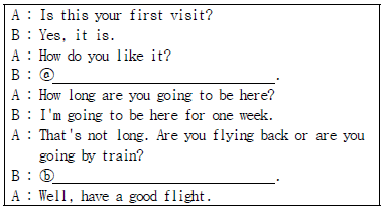
- ⓐ - I like it here very much.
ⓑ - I am flying back. - ⓐ - I don't like it.
ⓑ - I am not going to fly back. - ⓐ - I don't know where to go.
ⓑ - I am going by train. - ⓐ - I like it so much.
ⓑ - I will take the bus.
(정답률: 53%)
47. Which statement is true to the conversation below?
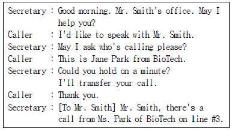
- Jane is Mr. Smith's secretary.
- Ms. Park works for Biotech.
- Jane is the last name of the caller.
- Ms. Park directly called Mr. Smith.
(정답률: 47%)
48. Which is the most appropriate expression for blank ⓐ?
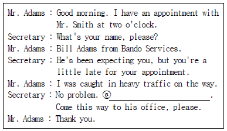
- I'll let you in.
- He stepped out of his office.
- He is not at his desk.
- You'd better change your appointment.
(정답률: 44%)
49. Reading the following message, choose the one phrase which has a grammatical error.
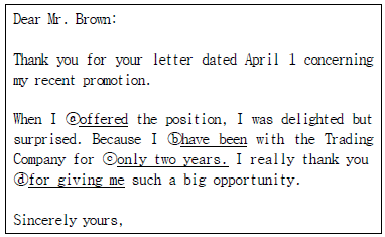
- ⓐ offered
- ⓑ have been
- ⓒ only two years
- ⓓ for giving me
(정답률: 27%)
50. Which is the most appropriate purpose of the following message?
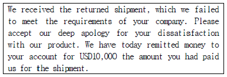
- Refund for returned shipment
- Complaint for defective product
- Exchange of goods
- Request for quick shipment
(정답률: 45%)
51. Which of the followings is correct in order?
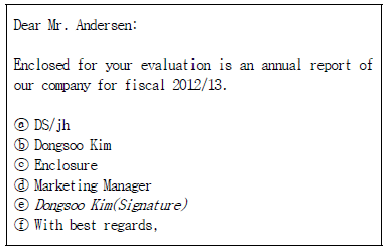
- ⓕ → ⓑ → ⓔ → ⓓ → ⓒ → ⓐ
- ⓕ → ⓔ → ⓑ → ⓓ → ⓐ → ⓒ
- ⓔ → ⓑ → ⓓ → ⓕ → ⓒ → ⓐ
- ⓔ → ⓑ → ⓕ → ⓓ → ⓐ → ⓒ
(정답률: 63%)
52. Read four sets of dialogues and choose the one which does not match each other.
- A : Can I make an appointment with Mr. Anderson on Tuesday?
B : Let me check my appointment book. - A : By the way, do you know where it is?
B : It's at my office, isn't it? - A : How about an hour later?
B : I'm here to discuss our new product. - A : When would be convenient?
B : Could we meet tomorrow?
(정답률: 50%)
53. Which of the followings is the most appropriate expression for the blank?
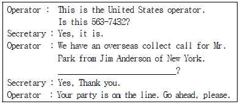
- Will you leave a message?
- Would you transfer this call to Mr. Jim Anderson?
- Can you take a memo for me?
- Will you accept the charges?
(정답률: 22%)
54. According to the following conversation, which of the followings is true?
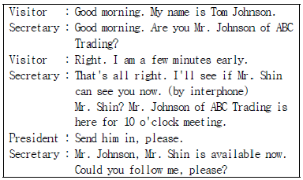
- Mr. Johnson wants to see Mr. Shin without an appointment.
- Mr. Johnson will meet with Mr. Shin right away.
- Mr. Shin is with a customer at his office.
- Mr. Johnson arrived Mr. Shin's office on time.
(정답률: 65%)
55. Read the following conversation and choose the least appropriate expression for the blank ⓐ.
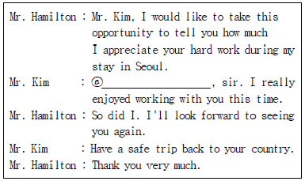
- Don't mention it
- You're welcome
- It's my pleasure
- That's all right
(정답률: 30%)
56. Read the following text carefully, fill in the blank with the most appropriate department name.
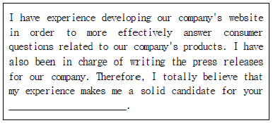
- Sales Department
- Public Relations Department
- Planning Department
- Human Resource Department
(정답률: 27%)
57. Choose the one which does not match each other.
- N/A : Not Applicable (해당사항 없음)
- CEO : Chief Executive Officer (최고 경영자)
- OJT : On the Job Task (직무 교육)
- IT : Information Technology (정보 기술)
(정답률: 32%)
4과목: 사무정보관리
58. 다음 중 프레젠테이션 시 유의점에 대한 설명으로 가장 적절하지 않은 것은?
- 준비한 대본에 지나치게 의지하지 말고 발표 전 충분한 연습을 통하여 편안한 태도로 문어체로 발표한다.
- 스크린을 응시할 것이 아니라 청중과 시선을 맞춤으로써 쌍방 의사소통의 효과를 높인다.
- 시각적·청각적인 의사 전달 수단뿐만 아니라 몸짓, 손짓 등의 표현을 적절히 사용한다.
- 회의장이 참석자의 숫자에 비해 지나치게 넓으면 산만해 질 수 있으므로 참석자의 숫자에 알맞은 크기의 회의장을 택하도록 한다.
(정답률: 50%)
59. 다음 중 정보보안 및 보호를 위한 황비서의 행동으로 가장 적절하지 않은 것은?
- 문서세단기가 없어서 문서내용을 확인할 수 없도록 손으로 여러 번 찢어 버렸다.
- 방문객이 상사의 근황에 관해 물을 때 개략적으로 답변했다.
- 회의실을 정리하면서 화이트보드에 남겨진 내용을 지웠다.
- 업무상 메일계정의 이메일메시지는 보낸 사람이 불분명하더라도 모두 열어보았다.
(정답률: 82%)
60. 다음 중 아래에 제시된 공문서에 대한 설명으로 가장 적절한 것은?
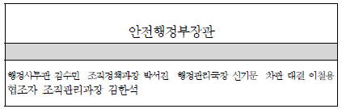
- 장관 부재 중 신기문 차관이 대결하였다.
- 차관 부재 중 이철용 국장이 대결하였다.
- 차관 부재 중 신기문 국장이 대결하였다.
- 장관 부재 중 이철용 차관이 대결하였다.
(정답률: 50%)
61. 윤비서는 명함관리를 위해 MS-Access를 사용하고 있다. ‘한국기업’에 소속되어 있는 사람의 명단을 추출하고자 한다. 이를 위해 사용해야 하는 가장 적합한 기능은?
- 테이블
- 쿼리
- 폼
- 보고서
(정답률: 38%)
62. 다음 중 가나다식의 회사 명칭별 문서 정리방법에 대한 설명으로 가장 적절하지 않은 것은?
- 한 회사에 관한 문서를 한 곳에 모을 수 있다.
- 직접적인 참조가 가능하여 색인이 반드시 필요하다.
- 잡건의 처리가 용이하다.
- 가이드의 배열이 단순해진다.
(정답률: 43%)
63. 다음 문서에 찍힌 그림에 대한 설명으로 틀린 것은?
- 문서 일부인으로서 서류에 그날 날짜를 찍는 도장이다.
- 이 그림이 찍힌 문서는 대한상공회의소에서 발송한 문서이다.
- 이 그림이 찍힌 문서는 2014년 7월 6일 오후 2시에 접수한 문서이다.
- 이 그림이 찍힌 문서는 문서발송번호가 1150번이다.
(정답률: 47%)
64. 미달러화, 일본엔화, 유럽유로화, 영국파운드화의 최근 한 달간 환율 변화를 비교하여 분석하고자 한다. 이 경우 사용하기 가장 적합한 그래프의 종류는?
- 누적 막대 그래프
- 100% 기준 누적 막대 그래프
- 꺾은선 그래프
- 방사형 그래프
(정답률: 64%)
65. 다음 중 아래의 그림에 대한 설명으로 가장 적절하지 않은 것은?
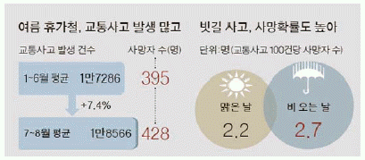
- 교통사고 발생 건수는 상반기에 비해 여름휴가철이 높다.
- 상반기 교통사고로 인해 사망한 인원수가 여름휴가철 사망한 인원수보다 낮다.
- 맑은 날에 비해 비오는 날 빗길 사고가 많이 난다.
- 비오는 날 교통사고로 인한 사망자수가 맑은 날보다 많다.
(정답률: 40%)
66. 다음 중 정보 수집 및 관리와 관련하여 비서에게 요구되는 능력이 아닌 것은?
- 필요한 정보가 어디 있는지(know-where) 찾아내는 능력
- 수집한 자료를 바탕으로 정보를 분석하고 보고할 수 있는 능력
- 상대방에게 정보를 효과적으로 전달할 수 있는 프레젠테이션 능력
- 필요한 정보를 찾지 못할 때 만들어 낼 수 있는 정보조작 능력
(정답률: 85%)
67. 다음 중 기밀정보 유출 방지를 위한 비서의 행동으로 가장 옳지 않은 것은?
- 업무관련 서류나 메모 등은 문서세단기 등을 이용하여 내용확인이 안되게 없앤다.
- 중요한 서류를 자의로 회사 밖으로 가지고 나가지 않는다.
- 퇴근 시 서류함이나 캐비넷 등을 모두 잠그고 열쇠는 집으로 가지고 간다.
- 컴퓨터에 즉시 화면보호기를 작동시킬 수 있는 단축키를 설정해 둔다.
(정답률: 46%)
68. 다음 중 문서관리에 관한 설명으로 가장 거리가 먼 것은?
- 사무처리의 증거자료로서 활용되므로 일정기간 보존하기 위해서 필요하다.
- 담당자 이외의 사람도 문서의 색출을 용이하게 한다.
- 효율적인 문서 관리를 통해서 매출의 극대화를 꾀할 수 있다.
- 보관기간이 지난 문서를 적시에 폐기하여 공간활용도를 향상시킨다.
(정답률: 43%)
69. 다음 중 아래와 같은 경우에 사용하기 적합한 문서작성 기능을 순서대로 나열한 것은?
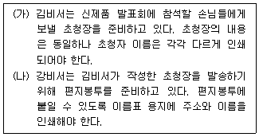
- 메일머지 - 라벨링
- 매크로 - 메일링 리스트
- 매크로 - 메일머지
- 라벨링 - 메일링 리스트
(정답률: 69%)
70. 대한기업 김 사장은 한 달간의 유럽출장기간동안 본인의 권한을 박 부사장에게 위임하였다. 김 사장의 출장 기간 동안 박 부사장이 행하는 결재는 다음 중 어느 것에 해당되는가?
- 전결(專決)
- 선결(先決)
- 대결(代決)
- 후결(後決)
(정답률: 43%)
71. 다음은 수신된 우편물의 봉투를 보관해야 하는 경우에 대한 설명이다. 어느 경우 보관해야 하는지 모두 고르시오.
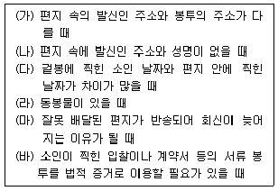
- (나), (다), (라), (마), (바)
- (가), (다), (마), (바)
- (가), (나), (라), (바)
- (가), (나), (다), (마), (바)
(정답률: 60%)
72. 다음 중 전자우편 시스템에서 작성한 메일을 다른 사람의 계정이 있는 곳으로 전송해 주는 역할을 하는 프로토콜은 무엇인가?
- SMTP(Simple Mail Transfer Protocol)
- POP3(Post Office Protocol 3)
- MIME(Multipurpose Internet Mail Extension)
- FTP(File Transfer Protocol)
(정답률: 54%)
73. 다음 중 사무용 물품에 대한 설명으로 가장 거리가 먼 것은?
- 모든 사무기기 및 가구 등에 자체 표찰을 부착하여 관리하였다.
- 문구용품, 전산기기 소모품, 복사용지, 팩스용지 등은 소모품에 해당한다.
- 사무용 비품은 여러 차례 사용하면 소멸되는 비품으로 감가상각 대상에 포함된다.
- 비품관리자는 항상 적당량의 재고를 유지해야 하며 적절한 물품을 적재적소에 공급하도록 노력해야 한다.
(정답률: 53%)
74. 다음 중 인터넷에서 사용되는 도메인 네임(Domain Name)에 대한 설명으로 틀린 것은?
- 도메인 네임은 네트워크로 연결된 컴퓨터를 식별하기위해 사용되는 이름이다.
- 도메인 네임은 숫자로 된 IP 주소를 사람이 이해하기 쉬운 문자 형태로 표현한 것이다.
- 도메인 네임은 루트, 최상위 도메인, 2차 도메인 등의 단계를 갖는 계층적 구조로 구성되어 있다.
- 도메인 네임은 오른쪽에서 왼쪽으로 갈수록 상위 도메인을 의미한다.
(정답률: 64%)
75. 다음 중 인사관리, 재무관리, 생산관리 등 기업의 전 부문에 걸쳐 독립적으로 운영되던 관리시스템의 경영자원을 하나의 통합 시스템으로 재구축함으로써 최적화된 기업 활동을 가능하게 하는 전산 시스템은 무엇인가?
- ERP(Enterprise Resource Planning)
- CALS(Commerce At Light Speed)
- EC(Electronic Commerce)
- EDI(Electronic Data Interchange)
(정답률: 57%)
76. 다음 중 전자문서로 처리 및 보관했을 때의 장점이 아닌 것은?
- 결재과정에서 시간을 줄일 수 있다.
- 문서의 검색이 용이해진다.
- 문서처리과정이 중복될 수 있다.
- 문서수발에 드는 비용을 절감할 수 있다.
(정답률: 79%)
77. 다음 중 같은 속성을 가진 사무 자동화 기기들로 짝지어진 것은?
- 스캐너, 키보드, 바코드 판독기
- OCR, LCD, PDP
- VoIP, Blu-ray, 화상회의시스템
- 디지타이저, SSD, 웹스토리지
(정답률: 34%)